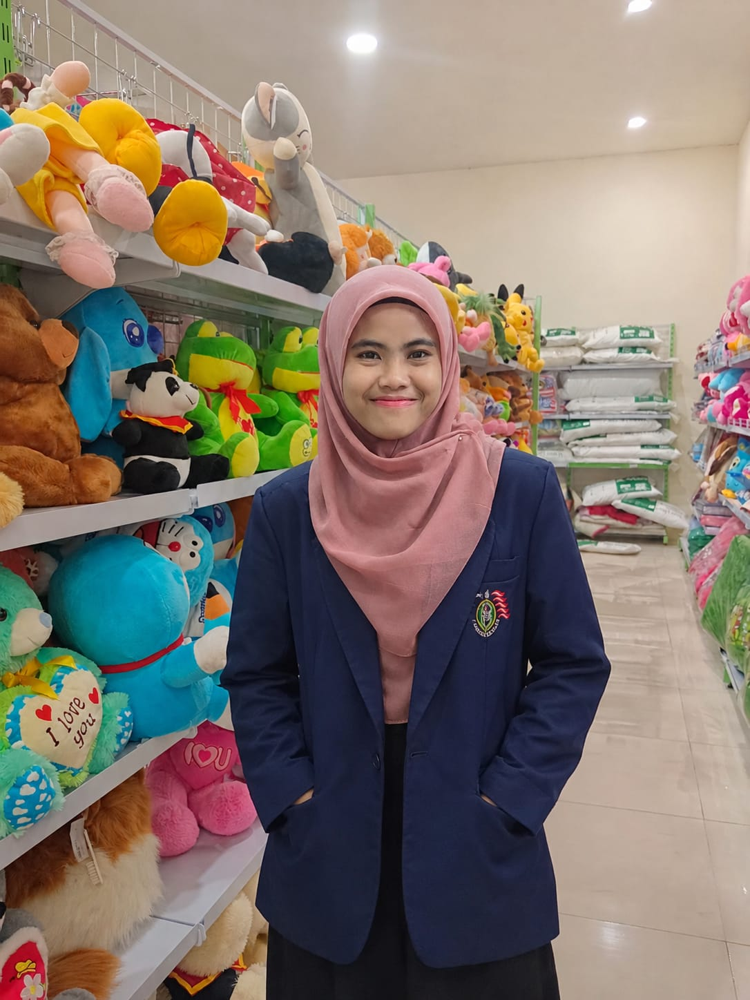

Mendidik dengan Hati
Mengutamakan pendekatan emosional, empati, dan rasa aman agar anak merasa dihargai di dalam kelas.
Halo, saya
Mahasiswa Pendidikan Guru Sekolah Dasar (PGSD)
Saya seorang mahasiswa yang sedang belajar menjadi guru yang kreatif, sabar, teladan, dan mampu menciptakan suasana pembelajaran anak yang menyenangkan.
Kenali Saya Lebih LanjutSedikit cerita tentang diri dan perjalanan saya sebagai calon pendidik anak bangsa.
| Nama | : | Hilda Himmatul Alya |
|---|---|---|
| NIM | : | 240152059 |
| Program Studi | : | Pendidikan Guru Sekolah Dasar |
| Semester | : | 5 |
| Hobi | : | Nonton Film & Olahraga (Bulu Tangkis) |

Saya ingin membantu siswa memahami pelajaran dengan cara yang sederhana, inklusif, dan interaktif. Menurut saya, setiap anak memiliki potensi unik yang perlu dirawat dan didukung dengan kasih sayang serta metode pengajaran yang tepat.
Prinsip utama yang menjadi kompas saya dalam mendidik dan mengajar.
Mengutamakan pendekatan emosional, empati, dan rasa aman agar anak merasa dihargai di dalam kelas.
Menghadirkan suasana belajar yang joyful melalui permainan edukatif dan media pembelajaran visual.
Mendorong setiap siswa untuk menemukan bakat alami serta membangun rasa percaya diri sejak dini.
Fokus keilmuan yang paling saya minati dalam program studi PGSD.
Mempelajari metode penyampaian konsep bangun datar, geometri, dan logika matematika melalui soal cerita yang mudah dipahami anak-anak.
Memahami tahapan tumbuh kembang fisik-motorik serta fase emosional siswa untuk merancang aktivitas belajar yang sesuai.
Kemampuan dan kegiatan yang sedang terus saya kembangkan.
Berlatih menjelaskan ide-ide kompleks dengan bahasa yang sederhana dan mudah dicerna anak-anak.
Mempelajari pembuatan materi belajar yang interaktif, visual, dan inovatif.
Aktif dalam kegiatan kepanitiaan kampus dan kolaborasi tim pembelajaran.
“Menjadi guru yang menginspirasi siswa untuk berani bertanya, terus belajar dengan gembira, dan percaya penuh pada kemampuan diri mereka sendiri.”
Silakan hubungi saya untuk berbagi ide, kolaborasi, atau berdiskusi seputar dunia pendidikan dasar.